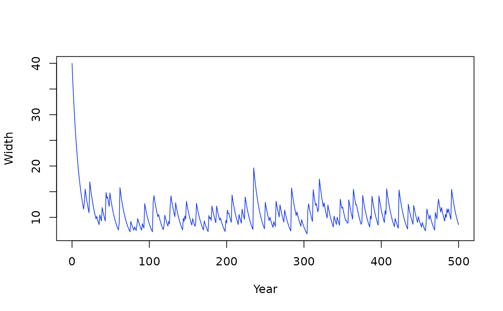

Stochasim Algorithm
stochasim.RdStochasim Algorithm
Stochasim Algorithm
Usage
stochasim(x, cross_section, rv_rate = 0.1, niter = 300)
stochasim2(x, y, cross_section, rv_rate = c(0, 0.1), niter = 300)Arguments
- x, y
Hydrographs, as a list or bare. Recycled to the same length.
- cross_section
A
"cross_section"object representing a stream's cross section.- rv_rate
Rate parameter for revegetation, passed to
revegetate().- niter
Number of iterations for
gbem::gbem()when running each hydrograph.- hydist
Hydrograph Distribution
- nsim
Number of event hydrographs to run; positive integer.
Value
A stochasim object, containing all the event hydrographs, and cross sections.
A stochasim object, containing all the event hydrographs, and cross sections.
Examples
library(distionary)
regime <- hydist_snow(distionary::dst_gev(1000, 3, 0.1), baseflow = 50)
cs <- gbem::cross_section(3, grad = 0.01, d50 = 0.1, d84 = 0.5, roughness = 0.01)
ss <- stochasim(regime, cross_section = cs)
#> Error in vapply(x, function(h) h(0), FUN.VALUE = numeric(1L)): values must be length 1,
#> but FUN(X[[1]]) result is length 0
ss_flows(ss)
#> Error in eval(expr, envir, enclos): object 'ss' not found
ss_widths(ss)
#> Error in eval(expr, envir, enclos): object 'ss' not found
# Start with a cross section
cs <- cross_section(3, grad = 0.01, d50 = 0.1, d84 = 0.5, roughness = 0.01)
# Make 1000 rain hydrographs and run stochasim
library(distionary)
dst_rain <- hydist_rain(dst_gev(1000, 3, 0.1), baseflow = 50)
rain <- realise(dst_rain, n = 1000)
ss <- stochasim(hydrographs, cross_section = cs)
#> Error in eval(expr, envir, enclos): object 'hydrographs' not found
plot(ss)
#> Error in eval(expr, envir, enclos): object 'ss' not found
plot(ss, "flows")
#> Error in eval(expr, envir, enclos): object 'ss' not found
# Make 1000 snow hydrographs and run stochasim on both hydrographs.
dst_snow <- hydist_snow(dst_norm(1000, 10^2), baseflow = 50)
snow <- realise(dst_snow, n = 1000)
ss2 <- stochasim2(snow, rain, cross_section = cs)
plot(ss2)
